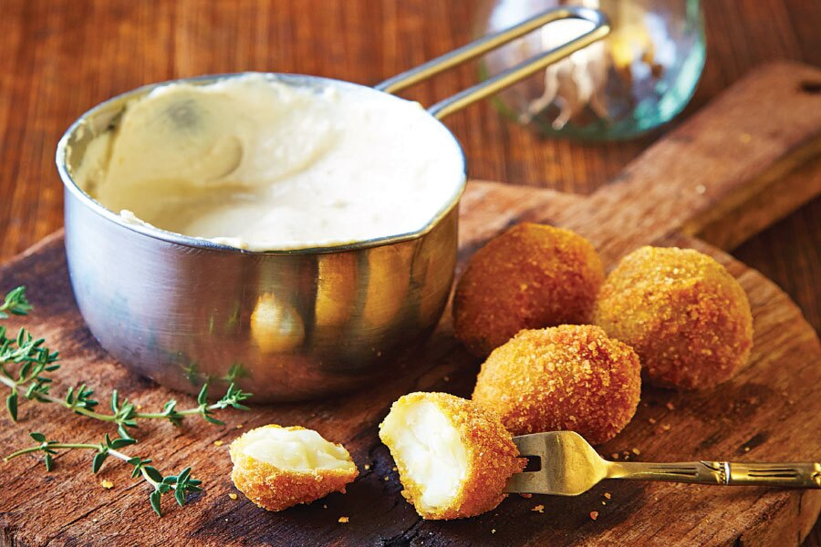

Receta croquetas de papas

Descripción:
Las croquetas de papa son una opción clásica y deliciosa, perfectas como aperitivo o acompañamiento.
Crujientes por fuera y suaves por dentro, estas croquetas son fáciles de preparar y siempre un
éxito en la mesa. Ideales para aprovechar papas sobrantes y disfrutar en cualquier ocasión.
Ingredientes:
- 1 Kg de papa (puré).
- Ajo.
- Perejil.
- Nuez moscada.
- 100 gramos de Queso rallado.
- Huevo.
- Sal.
- Jamón.
Pasos:
- Condimentamos el puré de papa con perejil cortado chiquito.
- Añadimos ajo, nuez moscada, sal y el queso rallado. Opcional: se le puede agregar jamón.
- Integramos bien y formamos balitas que pasamos por el huevo y pan rallado.
- Se pueden fritar o hacer al horno. ¡Ideales para acompañar con algún aderezo.